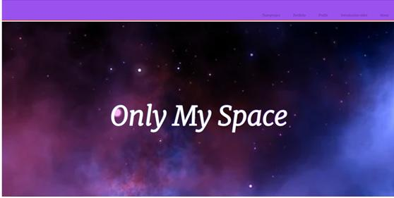
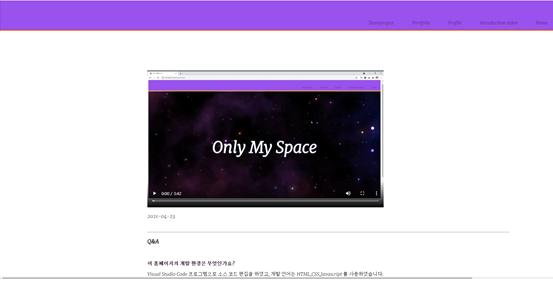
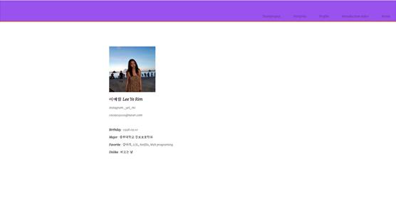
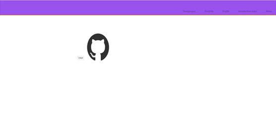
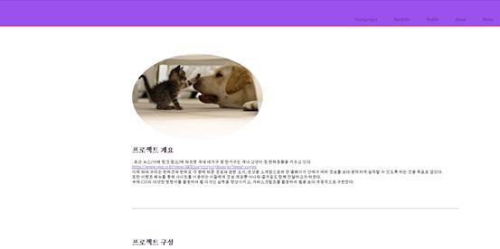

2021-04-23
Q&A
이 홈페이지의 개발 환경은 무엇인가요?
Visual Studio Code 프로그램으로 소스 코드 편집을 하였고, 개발 언어는 HTML,CSS,Javascript 를 사용하였습니다.
홈페이지가 보라색으로 도배가 되어있는데 보라색을 좋아하시나봐요?
아뇨. 그렇지 않습니다. 어쩌다보니 보라색을 선택하게 되었습니다.
그럼 무슨 색깔을 좋아하시나요?
저는 개인적으로 노랑색을 좋아합니다.
화면 설계




